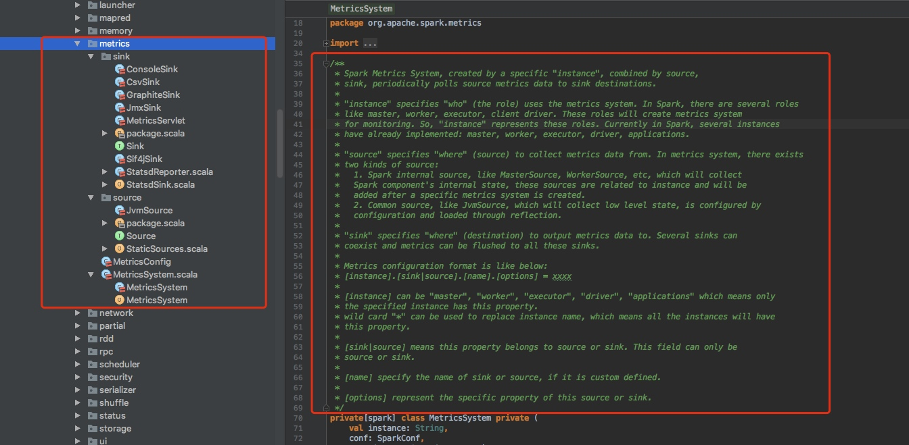

MetricsSystem类注释翻译

Spark Metrics System 结合源代码由特定的"实例"创建.
Sink,定期的拉取source中的度量数据(metrics data)到目标sink中.
"实例"指定"谁"(角色)使用metrics system.在spark中有几个角色,比如master,worker,executor,client driver.这些角色会创建度量系统进行监控.
所以实例代表这些角色.目前在spark中,已经实现了几个实例:master,worker,executor,driver,application.
"Source"指定"从哪里"(来源)去收集指标数据.在度量系统中,这存在两种来源:
1.Spark内部源,如MasterSource,WorkerSource等.它们将收集Spark组件的内部状态,这些源与实例相关,并将在创建特定度量标准系统后添加.
2.通用源,比如JvmSource,这些将收集低级别的状态,由配置进行配置并通过反射加载.
"Sink"指定将Metrics data 输出到哪里(目的地).多个sinks可以共存并且metrics可以都flush到这些sinks中.
Metrics配置格式如下所示
[instance].[sink|source].[name].[options] = xxxx
[instance]可以是"master","worker","executor","driver","applications"这意味着只有指定的实例才具有这个属性.可以用"*"来替换实例名,这意味着所有的这些实例将拥有此属性.
[sink|source]表示此属性是属于source还是sink.这个字段只能是source或者sink.
[name] 指定source或者sink的名字.如果它是自定义的.
[options] 代表这个source或者sink的具体属性
Metrics系统
Spark拥有一个基于Coda Hale Metrics Library的可配置Metrics系统,这个Metrics系统通过配置文件进行配置。
Spark的Metrics系统允许用户把Spark metrics信息报告到各种各样的sink包含HTTP和 JMX、CSV文件。
Spark的metrics系统解耦到每个Spark组件的实例中。每个实例里，你可以配置一组sink（metrics被报告到的地方）。
注：Coda Hale Metrics使用的Yammer.com开发的Metrics框架，官方网址是https://github.com/dropwizard/metrics ，相关文档可在https://dropwizard.github.io/metrics 查看。
配置文件
默认的配置文件为“$SPARK_HOME/conf/metrics.properties”，Spark启动时候会自动加载它。
如果想修改配置文件位置，可以使用java的运行时属性-Dspark.metrics.conf=xxx进行修改。。
Spark的Metrics系统支持的实例：
master：Spark standalone模式的 master进程。
applications：master进程里的一个组件，为各种应用作汇报.
worker：Spark standalone模式的一个worker进程。
executor：一个Spark executor.
driver：Spark driver进程(该进程指创建SparkContext的那个).
Spark的Metrics系统支持的Sink：
Sink指定metrics信息发送到哪，每个instance可以设置一个或多个Sink。
Sink源码位于包org.apache.spark.metrics.sink中。
ConsoleSink
记录Metrics信息到Console中。
| 名称 | 默认值 | 描述 |
|---|---|---|
| class | org.apache.spark.metrics.sink.ConsoleSink | Sink类 |
| period | 10 | 轮询间隔 |
| unit | seconds | 轮询间隔的单位 |
CSVSink
定期的把Metrics信息导出到CSV文件中。
| 名称 | 默认值 | 描述 |
|---|---|---|
| class | org.apache.spark.metrics.sink.CsvSink | Sink类 |
| period | 10 | 轮询间隔 |
| unit | seconds | 轮询间隔的单位 |
| directory | /tmp | CSV文件存储的位置 |
JmxSink
可以通过JMX方式访问Mertics信息
| 名称 | 默认值 | 描述 |
|---|---|---|
| class | org.apache.spark.metrics.sink.JmxSink | Sink类 |
MetricsServlet
| 名称 | 默认值 | 描述 |
|---|---|---|
| class | org.apache.spark.metrics.sink.MetricsServlet | Sink类 |
| path | VARIES* | Path prefix from the web server root |
| sample | false | Whether to show entire set of samples for histograms ('false' or 'true') ｜ |
除master之外所有实例的默认路径为“/metrics/json”。
master有两个路径: “/metrics/aplications/json” App的信息、 “/metrics/master/json” Master的信息
GraphiteSink
| 名称 | 默认值 | 描述 |
|---|---|---|
| class | org.apache.spark.metrics.sink.GraphiteSink | Sink类 |
| host | NONE | Graphite服务器主机名 |
| port | NONE | Graphite服务器端口 |
| period | 10 | 轮询间隔 |
| unit | seconds | 轮询间隔的单位 |
| prefix | EMPTY STRING | Prefix to prepend to metric name |
GangliaSink
由于Licene限制，默认没有放到默认的build里面。需要自己打包
| 名称 | 默认值 | 描述 |
|---|---|---|
| class | org.apache.spark.metrics.sink.GangliaSink | Sink类 |
| host | NONE | Ganglia 服务器的主机名或multicast group |
| port | NONE | Ganglia服务器的端口 |
| period | 10 | 轮询间隔 |
| unit | seconds | 轮询间隔的单位 |
| ttl | 1 | TTL of messages sent by Ganglia |
| mode | multicast | Ganglia网络模式('unicast' or 'multicast') |
source：
第一种为Spark内部source，MasterSource、WorkerSource等，它们会接收Spark组件的内部状态；
第二种为通用source，如：JvmSource，它收集低级别的状态
示例
通过类名为所有实例开启ConsoleSink
*.sink.console.class=org.apache.spark.metrics.sink.ConsoleSink
ConsoleSink的轮询周期 *.sink.console.period=10
*.sink.console.unit=seconds
**Master实例重置轮询周期**
master.sink.console.period=15
master.sink.console.unit=seconds
通过类名为所有实例开启JmxSink
*.sink.jmx.class=org.apache.spark.metrics.sink.JmxSink
为所有实例开启CsvSink
*.sink.csv.class=org.apache.spark.metrics.sink.CsvSink
CsvSink的轮询周期
*.sink.csv.period=1
*.sink.csv.unit=minutes
Polling directory for CsvSink *.sink.csv.directory=/tmp/
Worker实例重置轮询周期
worker.sink.csv.period=10
worker.sink.csv.unit=minutes
为master和worker、driver、executor开启jvm source
master.source.jvm.class=org.apache.spark.metrics.source.JvmSource
worker.source.jvm.class=org.apache.spark.metrics.source.JvmSource
driver.source.jvm.class=org.apache.spark.metrics.source.JvmSource
executor.source.jvm.class=org.apache.spark.metrics.source.JvmSource
参考文档：
${SPARK_HOME}/conf/metrics.properties.template
http://spark.apache.org/docs/latest/monitoring.html